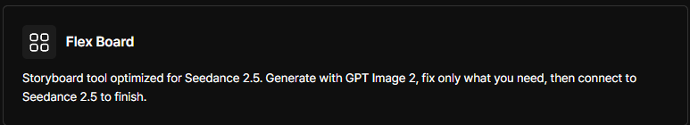
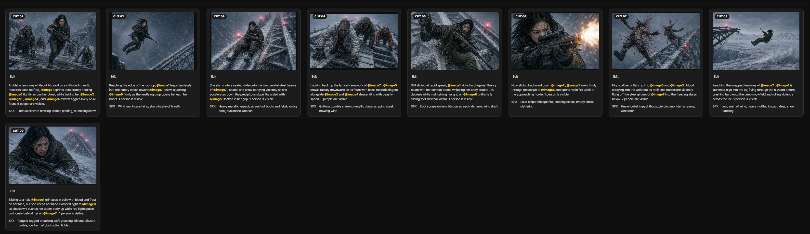
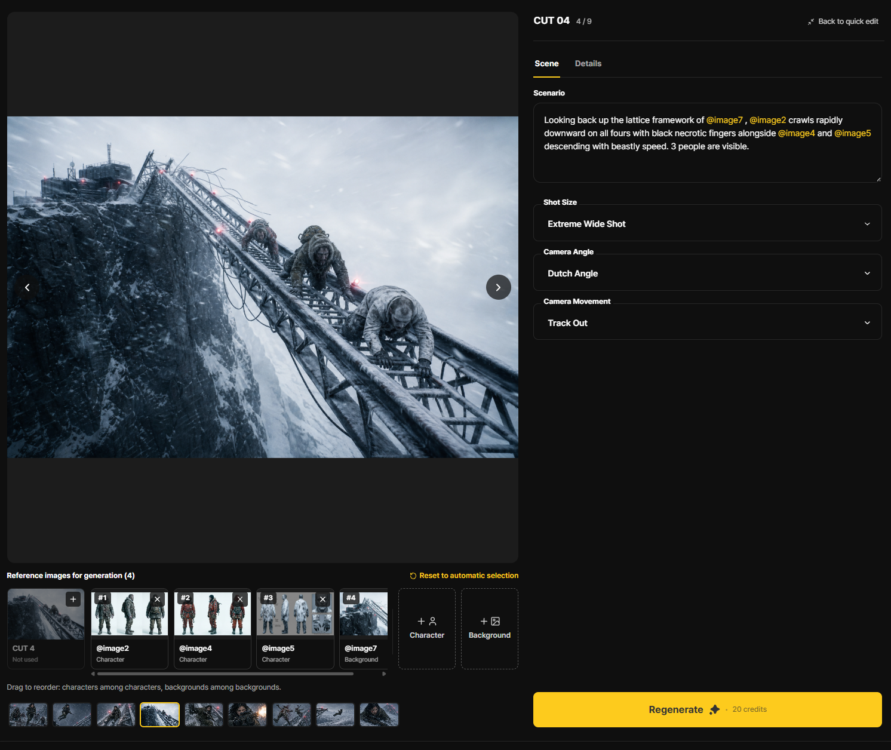
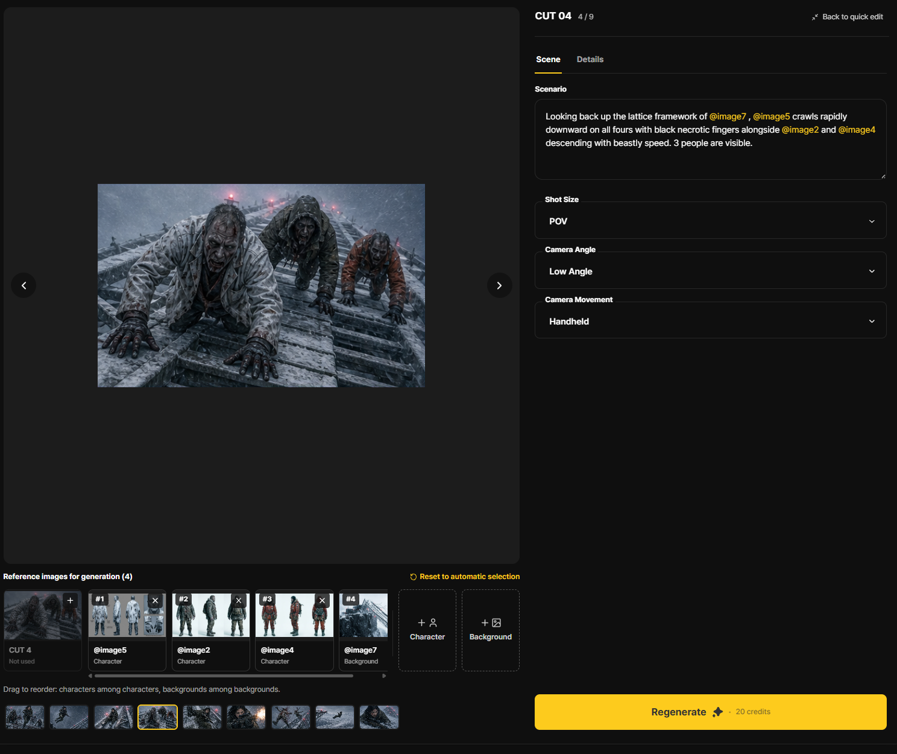

Open FlexBoard from the Storyboard tools
Select Flex Board in the Storyboard category to start a new project.
From the left sidebar in Xconda, open Storyboard to see the Flex Board card in the tools list.
Select the “Storyboard tool optimized for Seedance 2.5” Flex Board card.
On the workspace, select New Project to create a new project and open the Project Selection panel.


First decide how you want your story to be interpreted
Set the mode, model, and project name in Project Selection.
Auto Refine refines an idea and breaks it into cuts, while Instant Apply is used to quickly apply a scenario that is already organized.
Gemini 3.8 / Sonnet 5 are the available text-generation models. Switching models within a project may change the tone of the cut descriptions.
Enter a name in Project Name to identify the work. Choose a title that will be easy to find in the project list.

Decide what happens and how it should feel
Set the scene text, genre, and mood to define the direction of your storyboard.
In Scenario, write sentences describing the setting, characters, actions, and emotional states. List multiple events in sequence.
Genre defines the story's genre; the example shown is Suspense.
Tone / Mood sets the emotional tone of the scene; the example shown is Tense.
Select Save project to save the project settings you entered. In the next step, refine the reference images and panel layout.


Track the same subjects across cuts
Register images of characters and recurring subjects as cards, then manage them with @imageN tokens.
The Add Cast button adds a character or recurring subject. Each card is assigned a reference token such as @image1, @image2….
Add an image and a distinctive name to each card, such as Protagonist or Zombie 1. Use the token and name to identify subjects in cut scenarios.
Register each character on a separate card. After replacing or deleting cards, check that the tokens and cut text still match your intent.
Cast & Face Lock
This section collects reference images for characters and objects. The example shows cards for Protagonist, several Zombies, and a Sniper Rifle.
What Tokens Do
Reference images appear as @imageN in the text, making it easy to see which subjects each cut description refers to.

Set the scene, then decide how many cuts you need and how long they should be
Add the shared background, then set Number of Panels and Shot Length.
The Add Scene button adds a scene background. In the example, the background card is labeled @image7.
Number of Panels lets you set the number of cuts. The example shows 9 panels.
Shot Length slider sets the duration of each cut. The example is 15s, with a range of 4s–30s shown on screen.
Match the Scenario
Set the number of cuts based on the scene transitions. In Text Preview, check that the generated cuts are in the intended order.
Estimate the Duration
At 9 cuts × 15 seconds, the simple total is about 2 minutes 15 seconds. The actual result may vary depending on the video-generation workflow.
Review the cuts before generating images
Review the scene order and reference-image tokens in the text storyboard first.
Press the yellow Text Preview Generate button at the bottom of the setup screen.
Review the scene description and @imageN token, along with the SFX text at the bottom of each CUT card.
If the cut order, characters, or scene transitions feel off, go back to the scenario or panel count and adjust them before generating images.

Before creating cut images, check that the narrative flow and reference tokens are correct. Check the app for current pricing and credit requirements.
Each cut gets its own image
Compare the CUT cards, descriptions, and SFX in the text and image stages.
Each card is labeled CUT 01… and displays “No image for this CUT yet” when it has no image. The scene description and SFX appear below.
Once images are generated, compare each image with its description. Scan the full sequence to find cuts with continuity issues.
For a cut with an issue, select Edit to adjust its prompt and reference images.
See the Whole Sequence
Use the grid to see how the cuts connect. Check for cuts that are out of order or missing scenes.
Image and Text
Check that each cut image reflects the characters, setting, and action in its description, and that the SFX mood fits.


Get familiar with the tools on each cut card
Use the actions on each cut to edit, replace, or download only the cuts you select.
Select only the cuts that need revision. Leave successful cuts as they are, and open Edit only for cuts with issues.
Use Quick Edit for a brief instruction, or open Detailed Edit to review the shot, camera, and reference images in more detail.

Describe the change you want in one sentence
Select a cut, add reference images, or specify the scope of the change in Edit prompt.
On the cut you want to revise, select Edit. Confirm the target cut by matching the number at the top of the pop-up, such as CUT 04.
Reference images / Add lets you add reference images for this cut.
Edit prompt is where you enter the desired change. The field hint explains that @ tokens can specify reference images.
Apply edit — first confirm the target cut, instruction, and credit notice. For detailed shot and camera adjustments, open Detailed edit.
Where the camera is and how it moves
Review and recreate one cut's scenario, camera settings, and reference images in detail.
The large preview of the current cut is on the left; on the right are Scene / Details and Scenario, Shot Size, Camera Angle, and Camera Movement.
Shot size controls framing, angle sets the camera's height and tilt, and movement defines how the camera moves.
The example changes from POV · Low Angle · Handheld to Extreme Wide Shot · Dutch Angle · Track Out.
After reviewing the reference images and settings, select Regenerate. The screen shows 20 credits.
Before
POV · Low Angle · Handheld. A tense, character-centered composition.
After
Extreme Wide Shot · Dutch Angle · Track Out. A wider, tilted composition with the camera moving backward.


Review and adjust the order of reference images
Manage the Character and Background references used in a cut as a list.
Reference images for generation lists the Character / Background cards and @imageN tokens.
As noted at the bottom, reorder cards by dragging characters with other characters and backgrounds with other backgrounds. Compare the card lists before and after reordering.
If needed, add a ＋ Character / ＋ Background reference; then select Reset to automatic selection to restore the default selection.
Before
The reference-image list shows @image5, @image2, @image4, and @image7.
After
After reordering, review the character-token card order and references in the scenario again. The output image must be regenerated separately.
